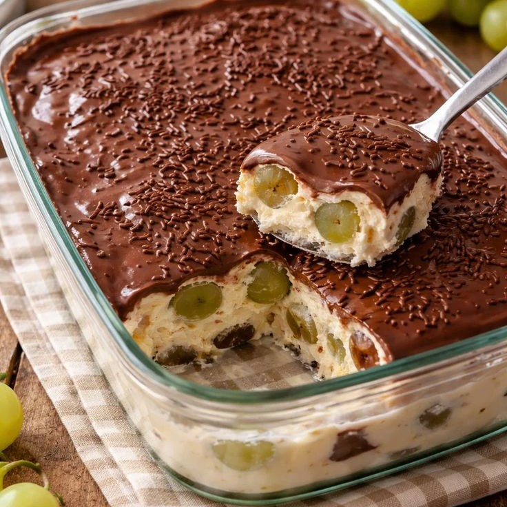

Aprenda a fazer esse maravilhoso bombom de uva na travessa, uma sobremesa cremosa, elegante e cheia de sabor. Com camadas de creme suave, uvas frescas e cobertura de chocolate, essa receita conquista tanto pelo visual quanto pelo sabor irresistível. Fácil de preparar e perfeita para servir em encontros especiais, ela combina frescor e doçura na medida certa, garantindo uma sobremesa deliciosa e surpreendente para qualquer ocasião.

Fácil
1h
Projeto para fins
acadêmicos, feito
com amor pela aluna
Lívia Faccin
Copyright © 2026 Sweet Bytes